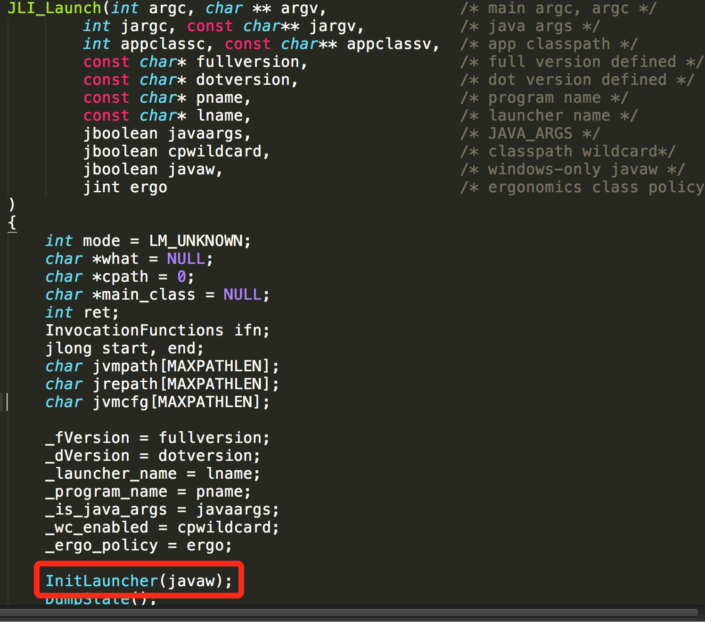
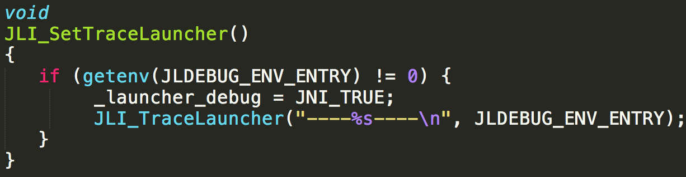
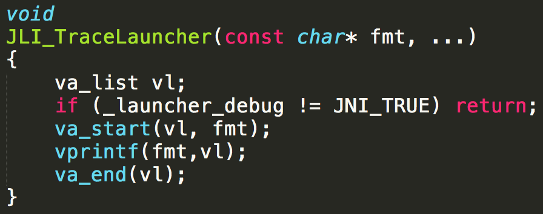
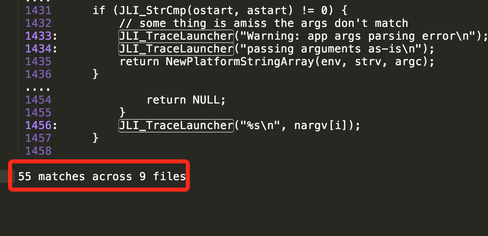
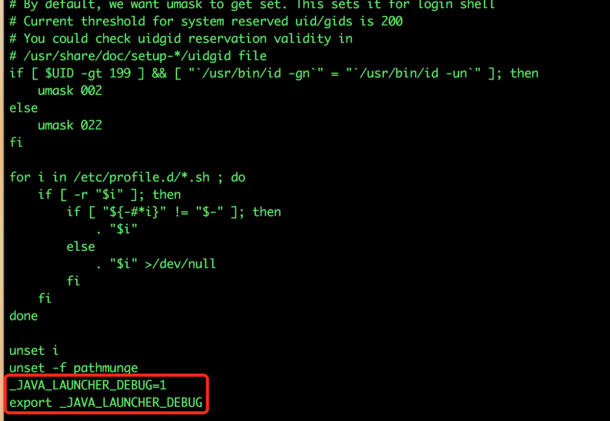
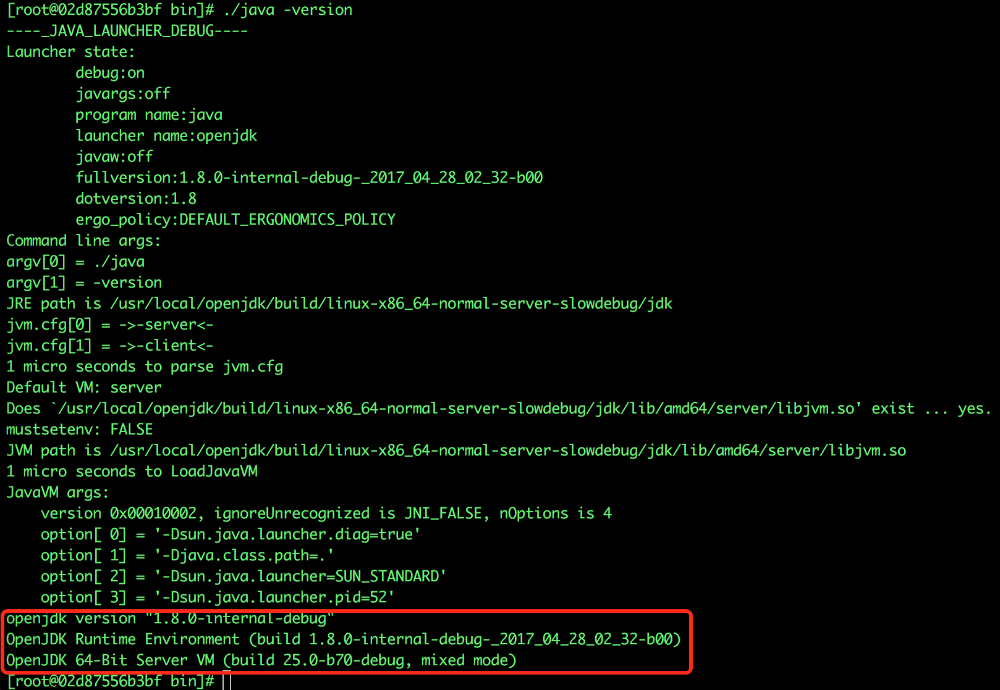
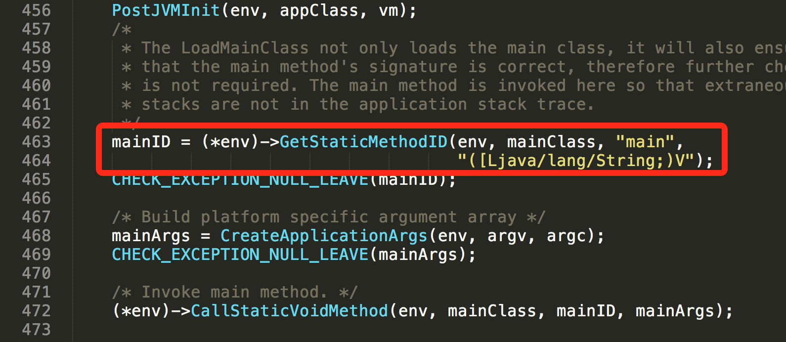
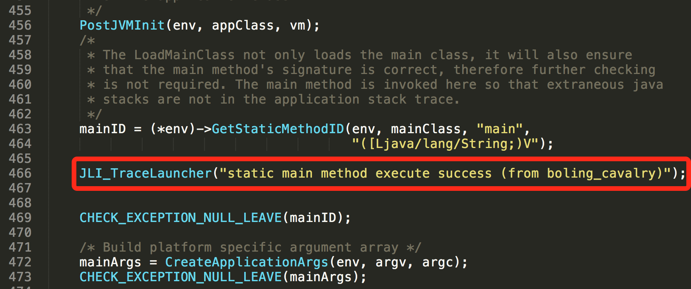
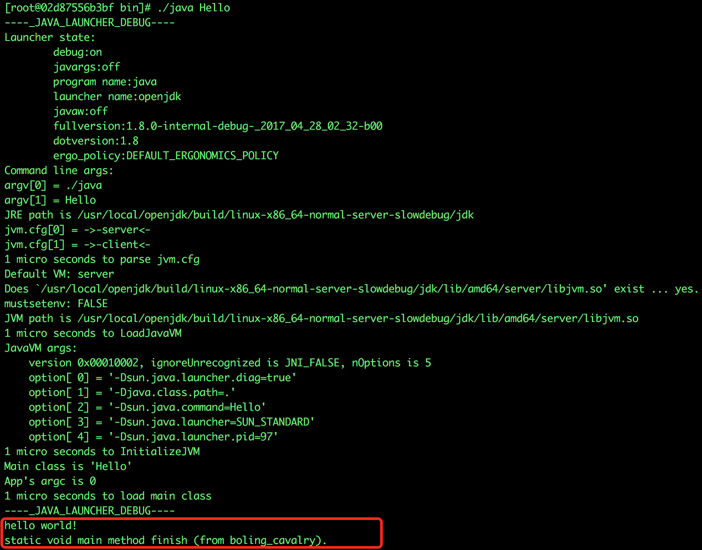

本文中的实战都是在docker容器中进行的，容器的出处请参照《在docker上编译openjdk8》一文，里面详细的说明了如何构造镜像和启动容器。
在上一篇文章《修改，编译，GDB调试openjdk8源码(docker环境下)》中，我们分析了虚拟机启动的代码，在阅读JLI_Launch函数的时候，发现调用了InitLauncher函数，如下图红框部分：

这个InitLauncher函数有何作用？展开后发现里面调用了JLI_SetTraceLauncher函数，而JLI_SetTraceLauncher函数的源码如下：

很简单，如果环境变量"_JAVA_LAUNCHER_DEBUG"的值不等于0，就将_launcher_debug的值设置为1。
_launcher_debug有什么用呢？我们看看/usr/local/openjdk/jdk/src/share/bin/jli_util.c文件中的JLI_TraceLauncher方法:

原来如此，只要_launcher_debug等于1，JLI_TraceLauncher方法在执行的时候就不会提前返回，而是把入参的信息做格式化再打印出来，在openjdk目录下全局搜索JLI_TraceLauncher函数，发现调用的地方还真不少呢，如下图，9个文件里都有调用：

在容器中执行vi /etc/profile命令，在内容的最底部新增两行脚本：
_JAVA_LAUNCHER_DEBUG=1
export _JAVA_LAUNCHER_DEBUG如下图：

在执行以下命令使配置生效：
source /etc/profile现在回到目录/usr/local/openjdk/build/linux-x86_64-normal-server-slowdebug/jdk/bin，执行./java -version，会发现输出的内容比以前丰富了很多，如下图，红框内是修改/etc/profile之前的输出，其他的全是新增的内容，这些新增的内容都是通过JLI_TraceLauncher输出的，以前由于没有环境变量_JAVA_LAUNCHER_DEBUG导致不输出，现在可以全部看到了：

虽然已通过设置环境变量_JAVA_LAUNCHER_DEBUG看到了更多的信息，但似乎意犹未尽，不如我们改一点openjdk源码，亲自调用一下JLI_TraceLauncher函数试试。
首先我们修改/usr/local/openjdk/jdk/src/share/bin/java.c，在JavaMain函数中，找到下面这一行：

在上面红框位置的下面增加一行代码JLI_TraceLauncher("static main method execute success (from boling_cavalry)");
这样代码的意思是在class类的main函数执行完毕后，输出一段文本信息"static main method execute success (from boling_cavalry)"
修改后如下图：

现在回到/usr/local/openjdk目录下，执行以下两个命令开始编译openjdk源码：
./configure --with-debug-level=slowdebug
make all ZIP_DEBUGINFO_FILES=0 DISABLE_HOTSPOT_OS_VERSION_CHECK=OK CONF=linux-x86_64-normal-server-slowdebugjdk构建成功后，我们新建一个类Hello.java，在此位置新建：/usr/local/openjdk/build/linux-x86_64-normal-server-slowdebug/jdk/bin，这个类很简单：
public class Hello{
public static void main(String[] args){
System.out.println("hello world!");
}
}在这个目录下执行./javac Hello.java生成Hello.class文件，再执行./java Hello，得到的输出如下：

红框中就是class中的输出以及我们修改openjdk源码添加的输出，达到我们的预期目的了，现在自定义的日志再加上上一章的GDB断点，可以帮助我们可以更好的阅读和实践openjdk源码，探索神秘的JVM。